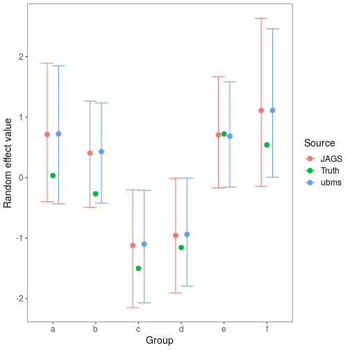

Comparing models fit in ubms and JAGS
Ken Kellner
Source:vignettes/JAGS-comparison.Rmd
JAGS-comparison.RmdIntroduction
One of the key features of ubms is the ability to include random effects in model formulas. This is not possible in unmarked, but it is possible with custom models using JAGS. To explore how estimates of parameters and uncertainty intervals compared between ubms and JAGS, I simulated a basic occupancy dataset with known parameter values and fit models with both. In this simulation, individual sites were nested within groups, and I estimated group-level random intercepts. This is a common scenario for so-called stacked data from multiple years, where the “groups” are unique sites and “sites” represent unique site-year combinations.
Simulating the data
First I set the true parameter values for the vector of fixed effects and the random effects standard deviation .
beta <- c(0.4, -0.5, 0.3, 0.5)
sigma <- 1.2Then, I simulated covariate data for the occupancy and detection submodels. This included a random group assignment (26 possible groups) for each site.
dat_occ <- data.frame(x1=rnorm(500), group=factor(sample(letters[1:26], 500, replace=T)))
dat_p <- data.frame(x2=rnorm(500*5))Next I simulated the random effect value for each group (with an effects parameterization centered on 0).
re <- rnorm(26, 0, sigma)Finally, I simulated an occupancy dataset y using the data and parameter values obtained above.
y <- matrix(NA, 500, 5)
z <- rep(NA, 500)
group_idx <- as.numeric(dat_occ$group) #convert group assignment to numeric index
idx <- 1
for (i in 1:500){
#True latent state of site i in group group_idx[i]
z[i] <- rbinom(1,1, plogis(beta[1] + beta[2]*dat_occ$x1[i] + re[group_idx[i]]))
#Observation process
for (j in 1:5){
#Observed data at site i for observation j
y[i,j] <- z[i]*rbinom(1,1, plogis(beta[3] + beta[4]*dat_p$x2[idx]))
idx <- idx + 1
}
}Fitting the model in ubms
I combined the covariates and simulated data into an unmarkedFrame.
library(ubms)
umf <- unmarkedFrameOccu(y=y, siteCovs=dat_occ, obsCovs=dat_p)Using stan_occu, I fit a model with a random effect of group on occupancy ((1|group)). I probably did not use enough iterations but it’s fine for this example.
ubms_fit <- stan_occu(~x2~x1+(1|group), umf, chains=3, iter=300, cores=3, seed=123)Fitting the model in JAGS
A bit more work is required to fit this model in JAGS. First I reorganized the data into a list so it could be sent to JAGS.
nsites <- nrow(umf@y)
jags_data <- list(y=umf@y, x1=dat_occ$x1, group=as.numeric(dat_occ$group),
ngroups=nlevels(dat_occ$group),
x2=matrix(dat_p$x2, nrow=nsites, byrow=TRUE),
nsites=nsites, nobs=ncol(umf@y))Next I wrote a simple occupancy model with group-level intercepts gint in the BUGS language, and saved it to a temporary file.
modfile <- tempfile()
writeLines("
model{
#Likelihood
for (i in 1:ngroups){
gint[i] ~ dnorm(beta[1], tau.group)
}
for (i in 1:nsites){
z[i] ~ dbern(psi[i])
logit(psi[i]) <- gint[group[i]] + beta[2]*x1[i]
for (j in 1:nobs){
y[i,j] ~ dbern(p[i,j]*z[i])
logit(p[i,j]) <- beta[3] + beta[4]*x2[i,j]
}
}
#Priors
for (i in 1:4){
beta[i] ~ dnorm(0,0.01)
}
sd.group ~ dunif(0,10)
tau.group <- pow(sd.group, -2)
}
", con=modfile)JAGS also requires a list of parameters you want to save, and a function to generate initial values. Generally you need to provide reasonable initial values for the latent state . Note that I’m saving both the parameter values ("beta" and "sd.group"), along with the actual random effects estimates ("gint").
Finally, I fit the model using the R package jagsUI.
set.seed(123)
library(jagsUI)
jags_fit <- jags(jags_data, inits, params, modfile, n.chains=3, n.adapt=100, n.iter=2000,
n.burnin=1000, n.thin=2, parallel=TRUE, verbose=FALSE)Running the model in JAGS is significantly slower, although you could speed up by marginalizing the likelihood.
Compare fixed effect estimates
With the model fit in both ubms and JAGS, I compared the fixed effect parameter point estimates and uncertainty intervals visually.
#Data frame of JAGS parameter estimates and UIs
jags_sum <- jags_fit$summary
beta_jags <- as.data.frame(jags_sum[1:5,c(1,3,7)])
names(beta_jags) <- c("mean","lower","upper")
beta_jags$source <- "JAGS"
#Data frame of ubms parameter estimates and UIs
ubms_sum <- summary(ubms_fit, "state")
beta_ubms <- rbind(summary(ubms_fit, "state")[,c(1,4,8)],
summary(ubms_fit, "det")[,c(1,4,8)])
beta_ubms <- beta_ubms[c(1:2,4:5,3),]
names(beta_ubms) <- c("mean","lower","upper")
beta_ubms$source <- "ubms"
#Data frame of true parameter values
beta_truth <- data.frame(mean=c(beta, sigma), lower=NA, upper=NA, source="Truth")
#Bind together
beta_plot <- rbind(beta_jags, beta_ubms, beta_truth)
beta_plot$Parameter <- rep(rownames(beta_jags), 3)
#Plot
library(ggplot2)
dodge <- position_dodge(0.4)
ggplot(data=beta_plot, aes(x=Parameter, y=mean, col=source)) +
geom_errorbar(aes(ymin=lower, ymax=upper), position=dodge) +
geom_point(position=dodge, size=3) +
labs(x='Parameter',y='Value', col='Source') +
theme_bw() +
theme(panel.grid.major=element_blank(), panel.grid.minor=element_blank(),
axis.text=element_text(size=12), axis.title=element_text(size=14),
legend.text=element_text(size=12), legend.title=element_text(size=14))
Fixed-effects parameter estimates are very similar between ubms and JAGS, as are the uncertainty intervals. In both cases the intervals overlap the true parameter values.
Compare random effect estimates
Finally, I did the same for the random effect estimates. The ranef method extracts random effects terms from a fitted ubms model. Although we specified the random effect in ubms as an “effects” parameterization, ranef automatically adds the random effect to the intercept term to get the complete random intercept at the group level. The group-level random intercepts in JAGS are parameter "gint".
#Get random effect estimates from ubms
re_ubms <- ranef(ubms_fit, "state", summary=TRUE)[[1]][[1]][,c(1,3,4)]
re_ubms$source <- "ubms"
#Get random effects estimates from JAGS
re_jags <- as.data.frame(jags_sum[grepl("gint", rownames(jags_sum)),c("mean","2.5%","97.5%")])
re_jags$source <- "JAGS"
names(re_jags) <- names(re_ubms)
#Get truth
truth <- data.frame(Estimate=re, `2.5%`=NA, `97.5%`=NA, source="Truth", check.names=FALSE)
#Combine
plot_dat <- rbind(re_ubms, re_jags, truth)
plot_dat$group <- rep(letters[1:26], 3)
levels(plot_dat$source) <- c("Truth","JAGS","ubms")
library(ggplot2)
dodge <- position_dodge(0.4)
#Plot a subset of random effects
plot_dat_sub <- plot_dat[plot_dat$group %in% letters[1:6],]
ggplot(data=plot_dat_sub, aes(x=group, y=Estimate, col=source)) +
geom_errorbar(aes(ymin=`2.5%`, ymax=`97.5%`), position=dodge) +
geom_point(position=dodge, size=3) +
labs(x='Group',y='Random effect value', col='Source') +
theme_bw() +
theme(panel.grid.major=element_blank(), panel.grid.minor=element_blank(),
axis.text=element_text(size=12), axis.title=element_text(size=14),
legend.text=element_text(size=12), legend.title=element_text(size=14))
As with the fixed effects, the estimated random intercepts are very similar between the two methods. Success!